類似于點和直線之間的關係，在平面 Π
中的任給一條直線  也把平面 Π 切成兩片，稱之為
的兩側。居于同側的兩點 A1, A2 ，其直線段
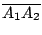 和
不相交；而居于異側的兩點 A, B，其直線段 也把平面 Π 切成兩片，稱之為
的兩側。居于同側的兩點 A1, A2 ，其直線段
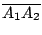 和
不相交；而居于異側的兩點 A, B，其直線段  和 相交。設 { A,B,C} 是
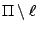 中的相異三點，而且
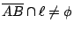，則
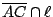
和
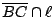 之中有一且僅有一為非空的。 和 相交。設 { A,B,C} 是
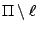 中的相異三點，而且
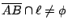，則
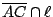
和
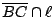 之中有一且僅有一為非空的。
上面所討論的是平面在連結（亦即
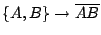
和 AB）和次序分隔上的基本結構和基本性質。現在讓我們再來探討平面在這種基礎之上所具有的進一層的本質和基本性質，例如常見常用的長度、角度、大小、形狀等等。
由平面的分隔，即一個平面 Π 被其上的一條直線分割成兩個半面，亦即
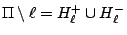，我們將稱之為對于 的兩個開半面
(open half-plane with respect to )，而
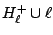 和
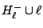
則稱之為對于 的閉半面 (close half-plane with respect to )，易証它們都是凸子集。
[証明留作習題]
設 { A,B,C} 是不共線三點，Π 是其所張的平面。令
H+1 是對于直線 BC 的閉半面而且含有 A 者，
H+2 是對于直線 CA 的閉半面而且含有 B 者，
H+3 是對于直線 AB 的閉半面而且含有 C 者；
則凸子集
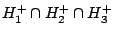
（如 [圖0-2] 所示）就是一個以 A, B, C 為其頂點的三角形，通常以
 表示之。 表示之。
[習題：試証它正是 { A,B,C} 的凸包。]
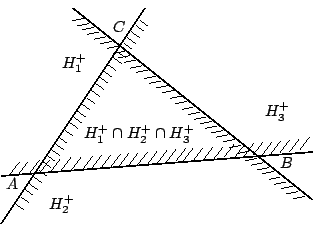
[ 圖0-2 ]
在幾何學的研討中，三角形是僅次于直線段和直線的基本幾何圖形，而空間的大部分基本性質都已經在三角形的幾何性質中充分體現。三角形之所以成為古希臘幾何學所研討的主角，其原因也就是：三角形既簡單而又能充分反映空間的本質。
大體上來說，空間的本質最為基本者就是前面已經討論的連結、分隔再加上對稱性，平行性和連續性。
|